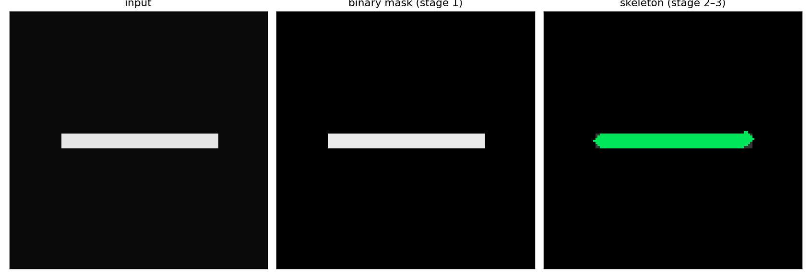
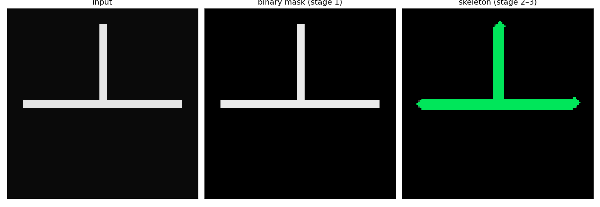
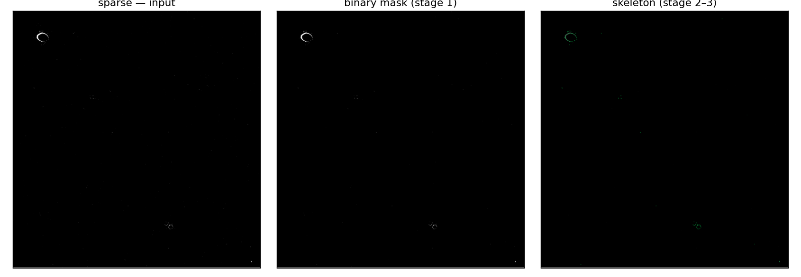
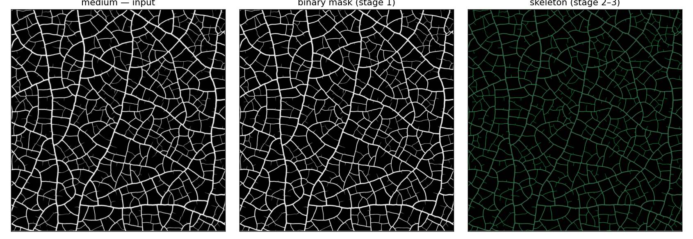
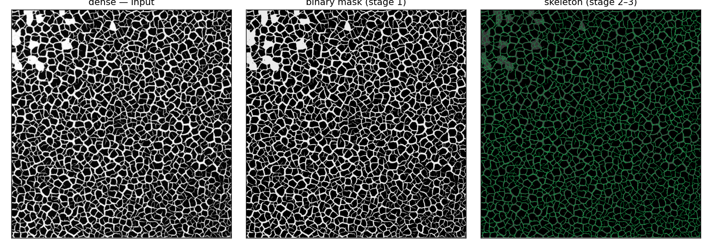

Two independent halves. The schematic cases run known-ground-truth
synthetic patterns through the exact binarize → skeletonize →
graph-extract chain export_crack_stats.py uses, and check the
measured numbers against hand-computable exact answers — this is the
proof that the pipeline measures what it claims to measure, fully
reproducible from examples/generate_examples.py with no
external data. The real cases show the same pipeline on actual
micrographs from this project's private raw dataset (not bundled in this
export — see README.md); the numbers shown are the pipeline's actual
output on real data, included for illustration, not independently
re-verifiable without that dataset.
A single 72×7px arm, no junction. Ground truth is exact up to end-cap/pixel-discretization rounding: one skeleton edge, filled area ≈ length × thickness.

| quantity | expected / ground truth | measured |
|---|---|---|
| n_edges | 1 (exactly) | 1 |
| crack_area_px2 | 504 | 511.0 |
| avg_width_px | 7 (thickness) | 7.47 |
| avg_edge_length_px | ≈72 (length) | 68.41 |
One straight host line with a second arm meeting it at 90° from the midpoint (does not cross through). Ground truth: exactly 3 skeleton edges (host-left, host-right, abutter), 1 degree-3 junction node, 3 endpoints, one connected piece. (This export computes edge count/topology only — the T-vs-Y angle classification itself is a separate, unexported part of the parent project; see README.md.)

| quantity | expected / ground truth | measured |
|---|---|---|
| n_edges | 3 (exactly) | 3 |
| n_junctions_deg3 | 1 (exactly) | 1 |
| n_endpoints | 3 (exactly) | 3 |
Lowest crack-area reading in the full 39-row dataset (~0.04%) -- included to show the method on a near-empty case, not just dense ones.

| quantity | expected / ground truth | measured |
|---|---|---|
| image size | — | 7327×7611 px |
| crack_area_pct | — (real data, no ground truth) | 0.042% |
| n_edges | — | 26 |
| avg_width_px | — | 12.35 |
| avg_edge_length_px | — | 73.28 |
This project's own canonical worked example (docs/crack_stats_schema.md §8) -- ~14.5% crack area, typical mid-range density.

| quantity | expected / ground truth | measured |
|---|---|---|
| image size | — | 7328×7612 px |
| crack_area_pct | — (real data, no ground truth) | 14.463% |
| n_edges | — | 1893 |
| avg_width_px | — | 22.51 |
| avg_edge_length_px | — | 189.32 |
~28.7% crack area, essentially fully percolated (giant_component_fraction > 0.9) -- the dense end of the range.

| quantity | expected / ground truth | measured |
|---|---|---|
| image size | — | 7338×7619 px |
| crack_area_pct | — (real data, no ground truth) | 28.716% |
| n_edges | — | 22510 |
| avg_width_px | — | 19.02 |
| avg_edge_length_px | — | 37.50 |